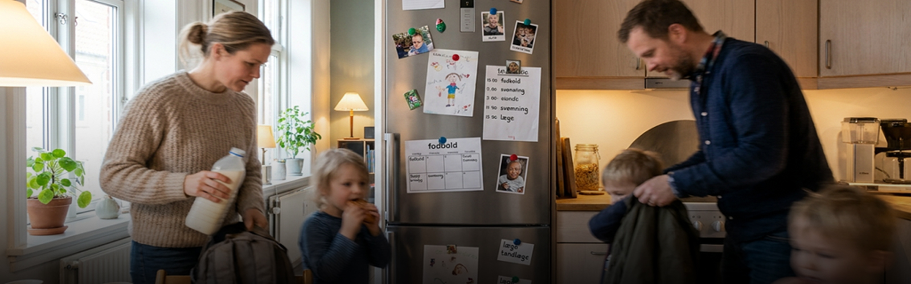

Artikler
Ingen artikler matcher lige nu. Prøv et andet ord eller en anden kategori.

Et samlet overblik over artikler om børn, hverdag og familielogistik — ét sted at slå op.
Ingen artikler matcher lige nu. Prøv et andet ord eller en anden kategori.